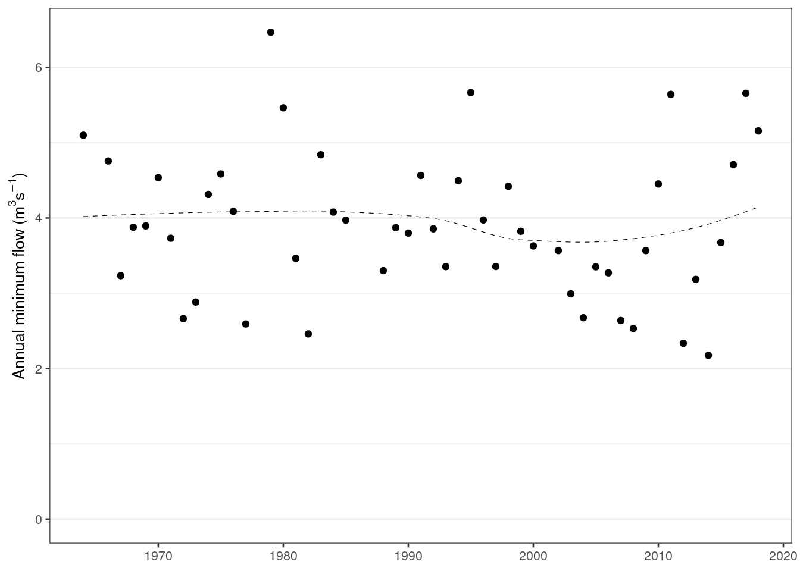
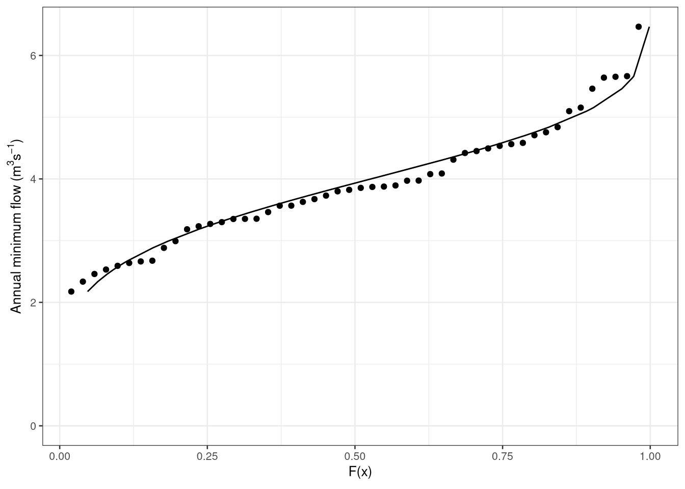
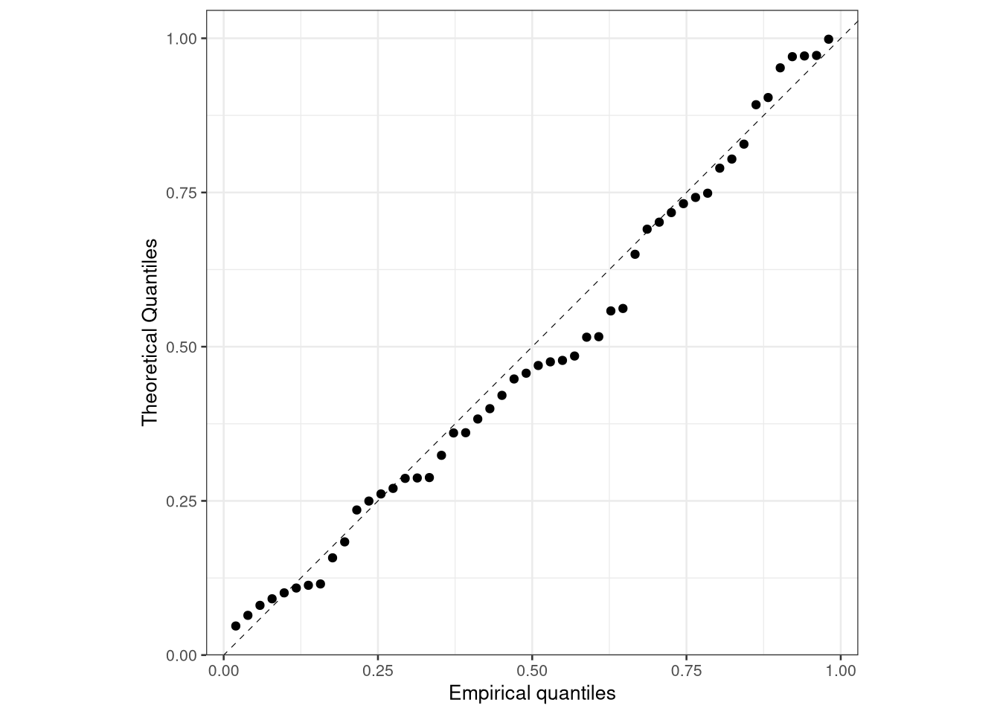
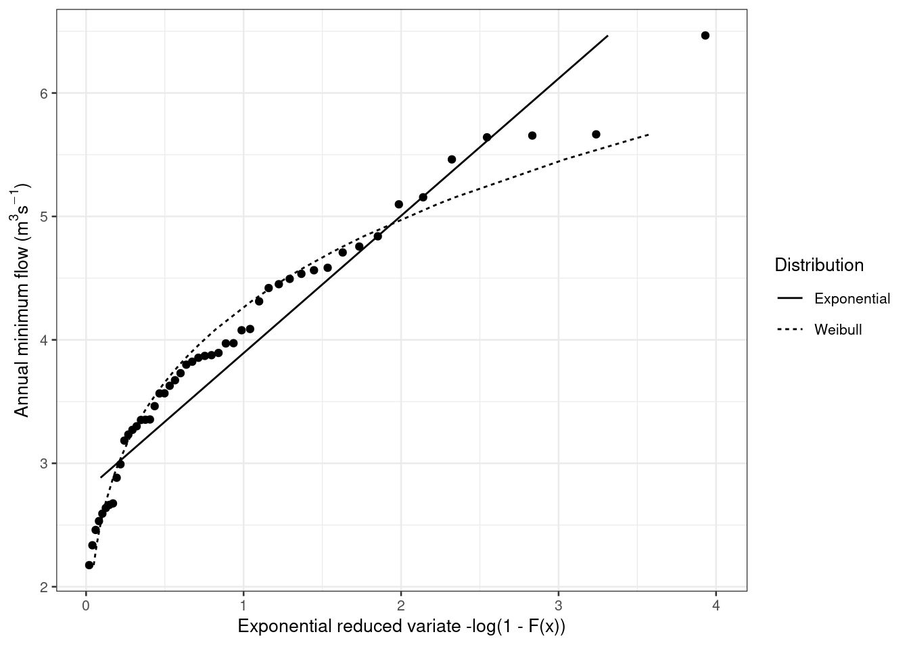

River Ngaruroro at Kuripapango in New Zealand (Table 4.3), has been selected for frequency analysis of annual minimum 1-day values, \(AM(1)\), using the Weibull (WEI) distribution. In mid-latitudes in the Northern Hemisphere, the calendar year is often used to select the annual minimum flows. This is a suitable period for the selection of independent events as the drought or low flow period commonly occurs during the summer months. In the Southern Hemisphere the low flow season occurs at the opposite time of the year, and for Ngaruroro the lowest flows are typically found in the period November to May. As a result \(AM(1)\) flows were selected for a hydrological year starting at 1 September.
library(tidyverse)
library(hydroDrought)
ngaruroro <- international %>%
filter(river == "Ngaruroro") %>%
select(data) %>%
unnest(data) %>%
# linear interpolation of periods of missing values
# with a duration of up to 15 days
sanitize_ts(approx.missing = 15) %>%
mutate(
year = water_year(time, origin = "-09-01")
) %>%
print()## # A tibble: 20,473 x 3
## time discharge year
## <date> <dbl> <dbl>
## 1 1963-09-20 30.5 1963
## 2 1963-09-21 52.8 1963
## 3 1963-09-22 43.6 1963
## 4 1963-09-23 37.3 1963
## 5 1963-09-24 32.3 1963
## 6 1963-09-25 29.0 1963
## 7 1963-09-26 25.3 1963
## 8 1963-09-27 22.4 1963
## 9 1963-09-28 19.9 1963
## 10 1963-09-29 18.2 1963
## # … with 20,463 more rows# remove incomplete years
incomplete <- ngaruroro %>%
filter(!is.na(discharge)) %>%
pull(time) %>%
coverage_yearly(origin = "-09-01") %>%
filter(days.missing > 0) %>%
print()## # A tibble: 7 x 5
## year days.in.year days.with.data days.missing coverage
## <dbl> <int> <int> <int> <dbl>
## 1 1963 366 347 19 0.948
## 2 1965 365 294 71 0.805
## 3 1978 365 305 60 0.836
## 4 1986 365 341 24 0.934
## 5 1987 366 336 30 0.918
## 6 2001 365 344 21 0.942
## 7 2019 366 38 328 0.104ngaruroro <- ngaruroro %>%
anti_join(incomplete, by = "year")# derivation of the annual minima
am <- annual_minima(
discharge = ngaruroro$discharge,
time = ngaruroro$time,
origin = "-09-01"
) %>%
rename(flow = am) %>%
arrange(flow) %>%
print()## # A tibble: 50 x 2
## year flow
## <dbl> <dbl>
## 1 2014 2.17
## 2 2012 2.34
## 3 1982 2.46
## 4 2008 2.53
## 5 1977 2.59
## 6 2007 2.64
## 7 1972 2.66
## 8 2004 2.68
## 9 1973 2.88
## 10 2003 2.99
## # … with 40 more rowsFigure 6.9 Time series of annual minimum 1-day flow, AM(1), for River Ngaruroro at Kuripapango (NZ).
Ngaruroro has a flashy river regime, but has no observed zero flows. The flows are considered to come from the same population as only a minor part of the catchment is influenced by snow in winter. The observations (daily flow series) cover the period 1 September 1964 to 31 August 2019. With the omission of 7 years (1963, 1965, 1978, 1986, 1987, 2001 and 2019) with missing data, a total of 50 annual minimum values results. The procedure used for interpolation of missing data is the same as in WE5.4. A histogram of the values is shown in Figure 6.3 (upper left). To test the assumption of stationarity, the values are plotted against time in Figure 6.9. No trend can be detected in the series and the data are therefore assumed to fulfil the requirement of independent and identically distributed data (iid).
The \(x\) values, AM(1), are sorted in ascending order and the rank of each value is calculated. The smallest value equals 2.175 in m3s-1 and is given rank 1.
The non-exceedance probability, \(F(x) = p\), ('prob.emp' in the tibble below) is calculated for each \(x\) value using the Weibull plotting position formula \(p_i = i / (n + 1)\) (Equation 6.6).
A probability plot for the \(AM(1)\) values is obtained by plotting the flow values against \(F(x)\) as demonstrated in Figure 6.10 (upper). A staircase pattern of several nearly equal values is observed. (Note that the \(AM(1)\) values now are plotted on the \(y\)-axis as compared to Figure 6.3, lower).
The return period ('rp.emp') of the smallest event can be calculated following Equation 6.5. The non-exceedance frequency, \(F(x)\), of the smallest event equals 0.02 according to step 2(b), which gives a return period of 51 years.
empirical <- am %>%
mutate(
rank = rank(flow),
prob.emp = rank / (n() + 1),
rp.emp = 1 / prob.emp
) %>%
arrange(rank) print(empirical)## # A tibble: 50 x 5
## year flow rank prob.emp rp.emp
## <dbl> <dbl> <dbl> <dbl> <dbl>
## 1 2014 2.17 1 0.0196 51
## 2 2012 2.34 2 0.0392 25.5
## 3 1982 2.46 3 0.0588 17
## 4 2008 2.53 4 0.0784 12.8
## 5 1977 2.59 5 0.0980 10.2
## 6 2007 2.64 6 0.118 8.5
## 7 1972 2.66 7 0.137 7.29
## 8 2004 2.68 8 0.157 6.38
## 9 1973 2.88 9 0.176 5.67
## 10 2003 2.99 10 0.196 5.1
## # … with 40 more rowsFitting the two-parameter Weibull (WEI) distribution function (Section A6.1.4) (assuming the location parameter \(\xi\) is zero) using the method of L-moments. 1 A direct estimation of the Weibull parameters is shown in the Fast Track section.
The first two L-moments (\(\hat\lambda_1\) and \(\hat\lambda_2\)) are estimated based on time series of the annual minima am$flow. These so called sample L-moments are calculated with the function samlmu() from the package lmom.
library(lmom)
moments <- samlmu(am$flow)
moments[1:2] ## l_1 l_2
## 3.8930400 0.5560016The parameter estimates of the WEI distribution (scale parameter \(\alpha\), shape parameter \(\kappa\)) are obtained following Equation A6.144:
\[\hat\alpha = \frac{\hat\lambda_1}{\Gamma\left( 1 + \frac{1}{\hat\kappa }\right)}\]
\[\hat\kappa = \frac{-\ln(2)}{\ln\left( 1 - \frac{\hat\lambda_2}{\hat\lambda_1}\right)}\]
kappa <- -log(2) / log(1 - unname(moments["l_2"] / moments["l_1"]))
alpha <- unname(moments["l_1"]) / gamma(1 + 1/kappa)
parameter <- c(location = 0, scale = alpha, shape = kappa)
parameter## location scale shape
## 0.000000 4.266122 4.497841\(F(x)\) for the WEI distribution is obtained following Equation A6.1.33 (recalling that the location parameter \(\xi\) is set to zero):
\[ F(x) = 1 - \exp\left[-\left(\frac{x}{\alpha}\right)^\kappa\right]\]
fitted <- empirical %>%
select(year, flow, prob.emp) %>%
mutate(
prob.wei = 1 - exp(-(flow / alpha)^kappa),
rp.wei = 1 / prob.wei
) The data can be plotted in a probability plot and compared to the empirical quantiles in step 2(b) (Figure 6.10, upper). The plot shows that the WEI distribution is well adjusted to the low flow extreme values, whereas deviation in the upper range may suggest that the three highest values do not belong to the low flow population (Section 6.3.3). In Figure 6.10 (lower) the empirical quantiles are plotted against the estimated distribution quantiles (QQ-plot). The points should be close to the unit diagonal if the data fit the WEI distribution well. The use of a plotting position implies that the ordered sample is plotted in regularly spaced positions. As demonstrated in the figure, the observed jumps in \(AM(1)\) values are reflected in the estimated Weibull quantiles, but not in the empirical quantiles.
Figure 6.10 (upper): Estimated quantiles for annual minimum 1-day flow, AM(1), for River Ngaruroro at Kuripapango (NZ); probability plot showing the fit for the Weibull distribution (curve) to the sample data.
Figure 6.10 (lower): QQ-plot of empirical quantiles versus Weibull quantiles
The non-exceedance frequency of the smallest value equals 0.0472 (Equation A6.1.33), which gives a return period of 21.2 years (Equation 6.5). This is 29.8 years less that the empirical estimate derived in step 2(d).
fitted## # A tibble: 50 x 5
## year flow prob.emp prob.wei rp.wei
## <dbl> <dbl> <dbl> <dbl> <dbl>
## 1 2014 2.17 0.0196 0.0472 21.2
## 2 2012 2.34 0.0392 0.0644 15.5
## 3 1982 2.46 0.0588 0.0806 12.4
## 4 2008 2.53 0.0784 0.0913 11.0
## 5 1977 2.59 0.0980 0.101 9.91
## 6 2007 2.64 0.118 0.109 9.20
## 7 1972 2.66 0.137 0.113 8.84
## 8 2004 2.68 0.157 0.115 8.67
## 9 1973 2.88 0.176 0.158 6.34
## 10 2003 2.99 0.196 0.184 5.45
## # … with 40 more rowsThe 50 and 100-year events can be estimated from Equation A6.1.34: \[ x_p = \xi + \alpha \left[-\ln( 1 - p ) \right]^{1/\kappa} \]
which gives: \(\hat x_{50} = 1.79\)m3s-1 and \(\hat x_{100} = 1.53\)m3s-1.
quantile_weibull <- function(prob, location = 0, scale, shape) {
location + scale * (-log(1 - prob))^(1/shape)
}
return.period <- c(50, 100)
q <- quantile_weibull(prob = 1/return.period, scale = alpha, shape = kappa) round(q, 2)## [1] 1.79 1.53The function samlmu() from the package lmom computes the sample L-moments for a given sample. These sample L-moments are independent of the distribution one wants to fit. They have can be transferred into the parameters of the desired distribution; e.g. the function pelwei() will return the location, scale and shape parameters for a Weibull distribution. By default a three parameter Weibull distribution is used. To obtain L-moment estimates of the two parameter Weibull distribution (where the lower bound and location parameter \(\xi\) is set to zero) set the argument bound = 0.
library(lmom)
lmom <- samlmu(am$flow)
par.wei <- pelwei(lmom, bound = 0)
par.wei## zeta beta delta
## 0.000000 4.266122 4.497841Quantiles for given probabilities can be calculated for many suitable distributions by the corresponding quantile function quawei().
quawei(f = c(0.02, 0.01), para = par.wei) %>%
round(digits = 2)## [1] 1.79 1.53The two-parameter EXP (Equation A6.1.64) and the WEI distribution are compared using the exponential reduced variable (Box 6.4).
fitted.fast <- am %>%
mutate(
prob.emp = rank(flow) / (n() + 1),
prob.wei = cdfwei(x = flow, para = pelwei(lmom, bound = 0)),
prob.exp = cdfexp(x = flow, para = pelexp(lmom))
) %>%
arrange(flow) %>%
print()## # A tibble: 50 x 5
## year flow prob.emp prob.wei prob.exp
## <dbl> <dbl> <dbl> <dbl> <dbl>
## 1 2014 2.17 0.0196 0.0472 0
## 2 2012 2.34 0.0392 0.0644 0
## 3 1982 2.46 0.0588 0.0806 0
## 4 2008 2.53 0.0784 0.0913 0
## 5 1977 2.59 0.0980 0.101 0
## 6 2007 2.64 0.118 0.109 0
## 7 1972 2.66 0.137 0.113 0
## 8 2004 2.68 0.157 0.115 0
## 9 1973 2.88 0.176 0.158 0.0876
## 10 2003 2.99 0.196 0.184 0.173
## # … with 40 more rowsBy substituting \(y\) into the expression for \(F(x)\), \(y\) can be expressed as \(-\ln(1 - F(x))\) (Equation B6.4.6). The parameters of the EXP distribution are estimated using L-moments (Equation A6.1.72) and used to calculate \(y\) and subsequently, \(F(x)\).
The non-exceedance probability \(F(x)\) for the observations is determined using the Weibull plotting position formula (Equation 6.6).
The \(AM(1)\) values are plotted against the reduced variate in Figure 6.11. A reduced variate of \(0.02\) corresponds to a return period of \(50.5\) years for minimum values (Equation 6.5). The data will plot as a straight line given they follow the EXP distribution. Again it is demonstrated that the WEI distribution fits the extreme low flow values well, and also the upper range apart from the three largest values. The two-parameter EXP distribution is less suited to model the sample. Alternatively, \(-\ln(X)\) could be plotted on a Gumbel probability paper, and a straight line would result provided the data fitted the WEI distribution.
Figure 6.11: The annual minimum 1-day flow, AM(1), plotted against the reduced variate, y, of the EXP distribution for River Ngaruroro at Kuripapango (NZ); the observations (marked as points), the two-parameter EXP distribution (continous line) and the two-parameter WEI distribution (dashed line).
